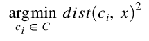
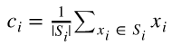

Each centroid defines a cluster – a data point is assigned based on the squared Eucidean distance.
Step Two

Data sets are recomputed - taking the mean of each clusters data points.
The follow sets keep iterating between the two formulas until there are no data points that shift to a different grouping.